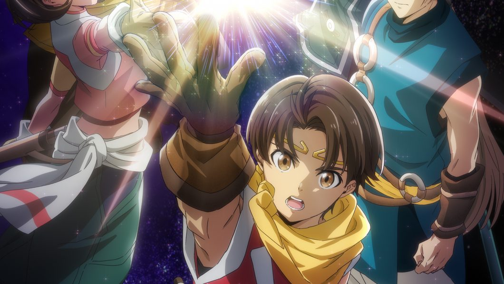

Suikoden: The Anime — Schedule, Cast, Trailer and Game Guide
The Suikoden II adaptation began in Japan on October 3, 2026. Check the weekly schedule after its expanded premiere, the official trailer, cast, story and guidance for viewers new to the games.

Official Suikoden anime visual. © Konami Digital Entertainment / Suikoden: The Anime Project. Official production site.
Release at a glance
- Japanese premiere
- October 3, 2026 · TOKYO MX 20:00 JST; expanded first episode
- Regular TOKYO MX slot
- Tuesdays 23:30 JST from October 13
- Production
- KONAMI animation
- Streaming
- Japan’s listed services; international availability varies
Checked October 24, 2026 · Official schedule
When did Suikoden: The Anime premiere?
Suikoden: The Anime began its Japanese rollout on October 3, 2026, with a 60-minute expanded first episode on TOKYO MX at 20:00 JST. That is 11:00 UTC. The production announced a progressive rollout across 32 Japanese stations, so October 3 is the first broadcast date rather than the start date of every channel. The extended opening also should not be taken as the standard runtime of the later episodes.
What is the regular weekly schedule?
After the opening special, TOKYO MX moved to Tuesdays at 23:30 JST from October 13. October 6 was reserved for a special program about the Suikoden franchise. BS Asahi began its own run on October 9, with a Friday 23:30 JST slot. The shift from a Saturday premiere to a Tuesday weekly slot is important if you are looking for the next television episode: the opening event does not define the regular broadcast day.
How do the late-night Japanese listings work?
Kansai TV lists its first episode on October 6 at 25:34 and later episodes from October 13 at 25:19. In ordinary calendar notation, those mean October 7 at 01:34 JST and Wednesdays at 01:19 JST, respectively. Other local stations have their own starting times. Use the official station-by-station table rather than copying a late-night hour without its date convention; otherwise a reminder can end up on the wrong calendar day. Related reading: Ranma 1/2 Season 3: Netflix Schedule, Cast and Watch Guide.
Where can you stream Suikoden?
Japan’s official on-air page lists streaming services beginning progressively after 20:00 JST on October 3. They include Prime Video, U-NEXT, ABEMA, Hulu, d Anime Store and others. This is a Japanese distribution list, not a worldwide rights map. The page also warns that schedules may change. For viewing outside Japan, check a locally licensed title listing and its episode availability rather than assuming that a familiar service name guarantees the same release in your country.
What is the story about?
The anime adapts Suikoden II, the Konami role-playing game. Its central figures are Riliu and his childhood friend Jowy, two members of the Highland Kingdom’s youth brigade in the Dunan region. They share a camp and hopes of returning to ordinary life when the fighting ends. Instead, war draws them into events that test what they believe and what they are willing to do with power. The official introduction frames their friendship and choices as the human center of the conflict.
Who are the main characters and actors?
Toshiki Kumagai voices Riliu, Shimba Tsuchiya plays Jowy, and Ayumi Hinohara voices Nanami, who grew up alongside them. Katsuyuki Konishi plays the mercenary Viktor, Yuichi Nakamura plays Flik, and Taku Yashiro voices Luca Blight. These are Japanese performance credits from the production’s English cast list. They do not confirm an English dub. New viewers can start by following the three childhood companions before trying to memorize every name in the larger ensemble. Related reading: My Happy Marriage Special Episodes: Release Date & Netflix Guide.
Who is producing the adaptation?
KONAMI animation is credited with production and producing, while NBCUniversal Entertainment Japan handles planning. The official English page names YUZO as chief director, Michihiro Tsuchiya for series composition and Ryo Yamauchi for anime character design. Fumi Ishikawa is credited for the game character designs, and Arata Suzuki for the anime character-design basis. Separating those roles helps explain how the adaptation acknowledges the game’s artwork while having its own animation production team.
Do you need to play Suikoden II first?
Playing the game is optional preparation, not a requirement established by the broadcast announcement. The anime introduces its own version of the characters and conflict; newcomers can follow it from the opening episode. For existing players, the useful question is how the adaptation presents those relationships, not whether the show reproduces every battle, recruitment option or gameplay system. Avoid later game walkthroughs if you want to experience the political turns without knowing the outcome. Related reading: So What's Wrong with Getting Reborn as a Goblin? Release Guide.
Which songs are used?
The opening is Kanashimi Sae Otonobite by amazarashi. Koji Nakamura supplies the music and performs the ending, closed eye sun, featuring Honoka Takahashi. The official site separates the creditless opening and ending videos from the promotional trailers. Choose the third PV if you want an overview of the anime’s advertised story and release; choose the creditless theme videos if you are specifically looking for the opening or ending animation without the on-screen production credits.
Watch the official third trailer
The third PV is linked from the official anime site and published by NBCUniversal Anime/Music. Its original YouTube metadata records September 17, 2026, at 20:03:59 UTC−07:00, equivalent to September 18 at 03:03:59 UTC and 12:03:59 JST. Its duration is 2 minutes 1 second. That date belongs to the trailer upload, not the October broadcast. The official poster below opens the original video directly if an embedded player is unavailable.

Open the original third PV on YouTube →
How does this fit the wider Suikoden series?
Konami’s portal identifies the anime specifically as an adaptation of Suikoden II. It separately lists Suikoden I & II HD Remaster and the new game Suikoden STAR LEAP. The portal also links a manga adaptation of the anime. Those are different formats and projects: a game launch trailer is not an anime episode, and STAR LEAP’s updates do not set the television show’s schedule. Start with the anime’s own website when searching for broadcast or casting news.
What should viewers check next?
The reviewed schedule establishes when the Japanese television and streaming rollout began, but does not guarantee identical worldwide release times or language options. It also does not, by itself, establish which game scenes will make the final adaptation. Check the anime’s current episode listings for viewing order and the relevant local distributor for subtitles or dubbing. A 60-minute opening and a large cast should not be used to calculate the season’s exact episode count.
Sources checked October 24, 2026: official Japanese schedule; official English story, cast and staff; official Japanese production site and music; Konami’s Suikoden portal; original official third PV.
Updated: · Sources, updates & corrections · Report an error